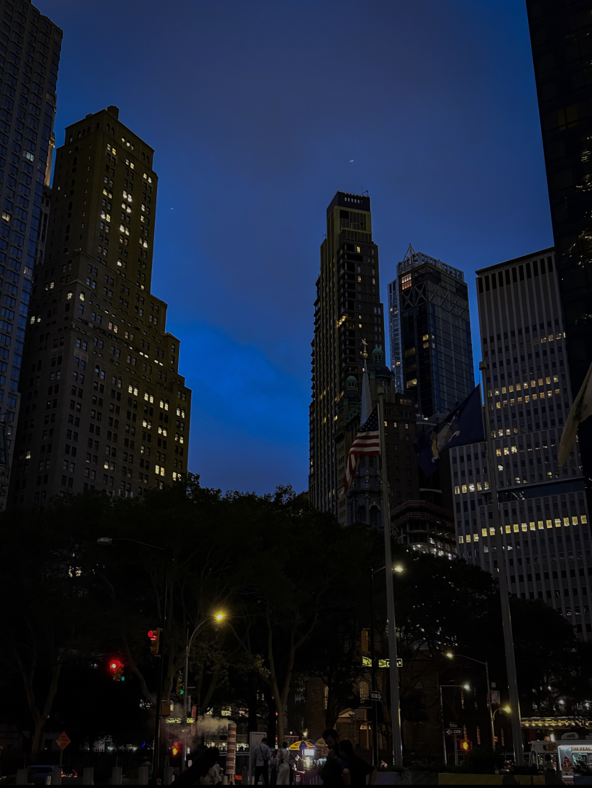
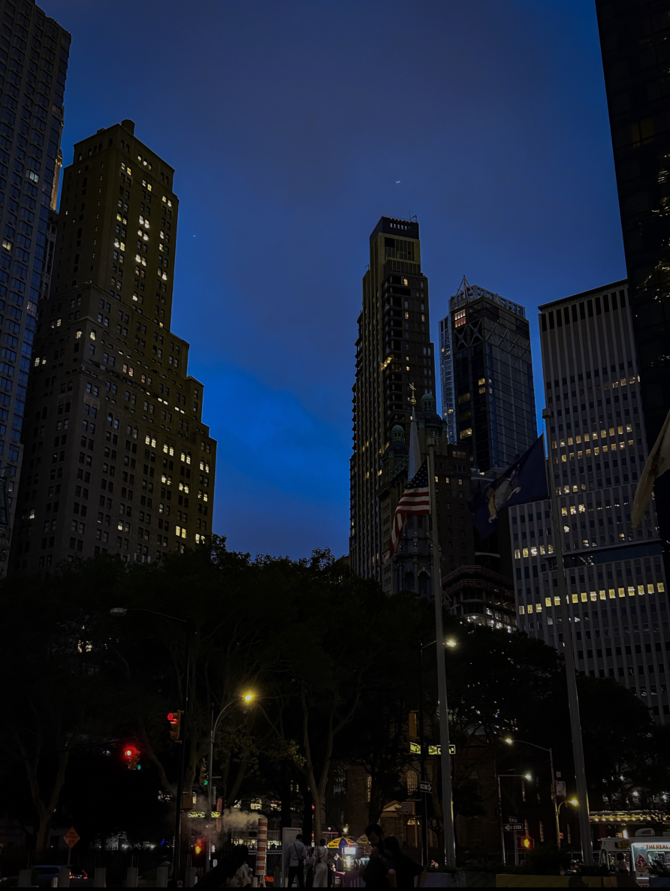

Projects
Collaborated with a partner on a data refinement and visualization project using Python, NuMPI, and Pandas
Analyzed and processed over 1 million data entries from two directories
Cleaned and sorted the data to facilitate analysis, gained proficiency in data cleaning, manipulation, and visualization
Identified top genres and films per genre based on number of reviews and overall ratings
Presented Insightful findings regarding trends in user preferences over decades
Developed a local URL shortener using Python, HTML, and CSS
Implemented a user-friendly web application allowing users to enter long URLs and receive shorter versions
Designed an aesthetically pleasing interface with dynamic elements, showcasing proficiency in front-end development and back-end Python logic.
Education
The City College Of New York(CUNY CCNY)
Bachelors of Science in Computer Science
Minor in Business Administration
Expected Graduation Spring 2025
Classes Taken
- Data Structures
- Discrete Math
- Probability and Statistics for Computer Science
- Intro to Computing
- Python Programming Language
Upcoming Classes
- Algorithms
- Machine Learning
- Software Design Lab

 
